Notes From The Underground - V
Modernity cannot be identified with any particular technological or social breakthrough. Rather, it is a subjective condition, a feeling or an intuition that we are in some profound sense different from the people who lived before us.
[Adam Kirsch (2016)]

The quantum protectorate describes a stable state of matter whose generic properties are determined by a higher organising principle and nothing else. The very large number of atoms present in real bits of matter lead to fundamentally new types of behaviour which are not just simply the properties of an individual atom multiplied by the number of atoms. Different behaviour occurs when you have more.
 (2013)
(2013)
Make two marks on your mirror on a level with your eyes, and think of them as two human eyes looking into yours.
Do not move your head, but stand erect. Concentrate all your thoughts on keeping your head perfectly still.
Do not let another thought come into your mind. Then, still keeping the head, eyes and body still, think that you look like a reliable man or woman should; like a person that anyone would have confidence in.
While standing before the mirror practice deep breathing.
The one that stands up like a man and has control over the muscles of his face and eyes always commands attention.
Also, sit in a comfortable chair and see how still you can keep.
This is not as easy as it seems.
You will have to center your attention on sitting still.
Watch and see that you are not making any involuntary muscular movements.
By a little practice you will find you are able to sit still without a movement of the muscles for fifteen minutes.
At first I advise sitting in a relaxed position for five minutes.
After you are able to keep perfectly still, increase the time to ten minutes and then to fifteen.
This is as long as it is necessary.
But never strain yourself to keep still.
You must be relaxed completely.
The Art of Manliness (2012)
Alexey Kondakov takes figures from classical paintings and drops them into modern-day Kiev.
 Fubiz (2015)
Fubiz (2015)
I regard the whole Northwestern United States to be among the global hubs of our present derangements. This week it emerged that Seattle 's school board has decided even maths must be subjected to the same numbing and unthinking orthodoxy of our time. In particular that mathematics must – like everything else – be seen through the prism of racism and oppression. Thus as the Seattle Public Schools guidelines for maths education show, students in Seattle schools will be invited to consider questions such as "Where does Power and Oppression show up in our math experience?" or "How has math been used to resist and liberate people and communities of color from oppression?" The cleverer students will realise that there is a "correct" answer to the questions, whether or not those answers are true – as there is to every other question of our age. They'll work out that the answer to every question posed by the Seattle authorities will always and everywhere be the same: "more diversity". But the problem is not with the smarter students, who like most smart people will always find a way to navigate around the lies and dogmas of their age, but the less intelligent applicants. A rather basic knowledge of maths would help such people and come in very handy in their lives: in ordering their finances, and working out their day-to-day interactions with others. If they do not pick up these basics at school, then it is highly unlikely that they will pick them up at some later stage, the education system offering the best chance anyone ever has to surpass their forebears. How disturbing it is to learn that instead, even in a discipline like maths, students will be cocooned and imprisoned in the lies of their age rather than being given the chance to escape them. Douglas Murray (2019)
One only believes in a divinity through what he has made within his own soul - Ibn 'Arabi (13th century)
God is an intelligible sphere, whose center is everywhere and whose circumference is nowhere. - Alain de Lille (12th century)
 The circled dot was used by the Pythagoreans and later Greeks to represent the first metaphysical being, the Monad or The Absolute.
The circled dot was used by the Pythagoreans and later Greeks to represent the first metaphysical being, the Monad or The Absolute.
And the people stood afar off, and Moses drew near unto the thick darkness where God was. - Exodus 20:21
Apophaticism, also known as negative theology or the via negativa, is a theological and mystical approach that seeks to understand God by emphasizing what cannot be said about the divine.
Rather than defining God through positive attributes, such as "God is love" or "God is good", apophaticism focuses on negations: stating what God is not.
This method acknowledges the infinite transcendence of God, asserting that human language, reason, and concepts are fundamentally inadequate to capture the fullness of the divine essence.
 (Excommunicated Spinoza, 1907 by Samuel Hirszenberg)
(Excommunicated Spinoza, 1907 by Samuel Hirszenberg)
Epicureanism is a school of philosophy founded in 307 BCE and based upon the teachings of Epicurus, an ancient Greek philosopher.
Epicurus was an atomist and materialist, following in the steps of Democritus.
His materialism led him to religious scepticism and a general attack on superstition and divine intervention.
It is a form of hedonism insofar as it declares pleasure to be its sole intrinsic goal.
Epicureanism is not about indulgence, but about rational self-management of desires and fears to achieve lasting peace.
Pain is understood in two forms: physical (bodily discomfort) and mental (distress, fear, regret).
The ultimate goal is aponia (absence of physical pain) and ataraxia (absence of mental disturbance).
Epicurus distinguished between desires: natural and necessary (e.g., food, shelter), natural but non-necessary (e.g., sexual pleasure, luxury food), and vain (e.g., fame, wealth).
He advised satisfying the first, cautiously enjoying the second, and eliminating the third—because unfulfilled desires create anxiety.
 The Girl with the Dragon Tattoo, Rooney Mara and Daniel Craig, 2011
The Girl with the Dragon Tattoo, Rooney Mara and Daniel Craig, 2011
[A Reforma da Primeira Liga]
O campeonato português de futebol tem um problema: o país está falido, sem pessoas, sem recursos e sem perspectivas que algo mude nas próximas décadas.
Assim sendo, a única alternativa é adaptar a primeira liga de futebol ao país existente, tentando extrair o máximo possível do mesmo, sem esquecer que os clubes ainda participam na Taça da Liga e na Taça de Portugal.
Vamos comparar o músculo populacional da liga portuguesa com outras ligas europeias.
Em França existem 20 clubes para 66 milhões de habitantes (3.3 milhões / clube), em Espanha existem 20 clubes para 46 milhões de habitantes (2.3 milhões / clube), na Alemanha existem 18 clubes para 81 milhões de habitantes (4.5 milhões / clube) e, finalmente, em Itália existem 20 clubes para 60 milhões de habitantes (3 milhões / clube).
Em Portugal existem 18 clubes para 11 milhões de habitantes (620 mil / clube).
Actualmente participam 18 clubes que fazem no total 34 jogos por época.
Na época 2016/17 os estádios receberam 3.622.372 de adeptos, o que dá uma média superior a 11.800 por encontro.
Contudo, a média é inflacionada pelos números dos três ditos grandes do futebol português: apenas o V. Guimarães consegue juntar-se-lhes com um registo de assistências acima da média (18.756 por jogo).
Os 51 jogos na Luz, Dragão e Alvalade atraíram 2.309.507 espectadores (média de 45.284), enquanto nos 255 jogos disputados nos restantes estádios estiveram 1.312.865 de pessoas nas bancadas, à média de 5148 por encontro.
Só existe uma opção possível: reduzir o número de clubes na primeira liga para 12 e acabar com a Taça da Liga.
Todos os anos desciam os últimos 2. Assim, Portugal ficaria com um rácio de 920 mil habitantes por clube (um número ainda bastante baixo quando comparado com a Alemanha).
A primeira liga teria 40 jogos pois seria disputada a 4 voltas.
Tudo ficaria melhor: os melhores clubes jogariam mais entre eles, o número de jogos com interesse seriam a maioria, duplicava-se o número de derbies, mais audiências das transmissões televisivas, etc.
No final, mais receita para os clubes, melhores jogadores, mais respeitabilidade da liga portuguesa, melhores hipóteses de competir na Europa. Devemos promover o que é bom e não afogar todos num oceano de mediocridade.
 (2017)
(2017)
Reasons to believe that the universe is a simulation include the fact that it behaves mathematically and is broken up into pieces (subatomic particles) like a pixelated video game.
“Even things that we think of as continuous – time, energy, space, volume – all have a finite limit to their size.
If that’s the case, then our universe is both computable and finite.
Those properties allow the universe to be simulated,” Terrile said.
The Guardian (2016)

 (2019)
(2019)
[White Privilege]
The former head of the Crown Prosecution Service, Lord Macdonald, told BBC there was "a major problem in particular communities" of men viewing young White girls as trash and available for sex.
The problem must be recognised "for what it is, which is profoundly racist crime," he added.
Twenty young women had given evidence covering a period from 2011 to 2014.
A total of 17 men and one woman have now been convicted of, or have admitted, charges including rape, supplying drugs and inciting prostitution.
Those prosecuted were from the Bangladeshi, Pakistani, Indian, Iraqi, Iranian and Turkish communities and mainly British-born, with most living in the West End of Newcastle.
The Independent (2017)
White children from poor or working-class backgrounds are falling behind their peers from other ethnic groups in educational achievement, and they face the worst prospects for economic advancement, experts told UK lawmakers.
Efforts to raise educational standards tend to be aimed at minority students, dimming prospects for white children to catch up, according to reports sent to a parliamentary committee that is investigating issues faced by disadvantaged groups.
The struggles of poor white children tend to be neglected because they are seen as "unfashionable" and "not worthy" of helping, the UK Daily Mail quoted Oxford University Professor Peter Edwards as saying.
Raising such concerns is "taboo" in academia, he said. White children whose families are poor enough for them to receive free school meals are underperforming their peers academically and have only a one-in-10 chance of attending university, according to the UK's Center for Education and Youth.
By comparison, in the same low-income group, three in 10 children of Black Caribbean ethnic backgrounds and five in 10 of Bangladeshi ethnicity make it to college.
Nearly seven in 10 ethnic Chinese children who receive free school meals attend university.
Despite the plight of white students, government and private education programs target large cities with ethnically diverse populations and, in the case of some charities, require that beneficiaries be non-white.
Working-class white boys, in particular, are at the bottom of the heap when it comes to educational assistance, Edwards told the Daily Mail.
RT (2020)
“I’m personally branding myself according to what I want to do in the world,” said Maya Zuckerman, a transmedia producer (that is, a producer who works across digital platforms) whose LinkedIn profile identifies her as a “Media Entrepreneur, Story Architect, Culture Hacker”.
“But to be honest I change the title on my LinkedIn every few months and try to see what hits.”
[Sam Slaughter (2015)]
Even permanent workers are subjected to frequent changes of job title, location and roles.
In an environment of hotdesking, weak social ties, short-term projects and strictly regulated speech, so as to maintain the correct mindset, it seems that any evidence of attachment to place or identity must be regularly swept away in order to keep the work surfaces clean and hygienic.
[Non-Stop Inertia (2011), Ivor Southwood]

Many warriors of WWII are bewildered and overwhelmed by a multicultural Britain that, they say bitterly, they were never consulted about nor feel comfortable with. 'Our country has been given away to foreigners while we, the generation who fought for freedom, are having to sell our homes for care and are being refused medical services because incomers come first.' Her words may be offensive to many but Sarah Robinson defiantly states: 'We are affronted by the appearance of Muslim and Sikh costumes on our streets.' Daily Mail (2009) Peter Hitchens – "We won the war, or did we?"
[Never Ending Conflict]

"Power is everywhere, not because it embraced everything, but because it comes from everywhere." For Foucault, power is present on all levels of society because certain knowledges have been legitimized and accepted as true. This leads people to learn to speak in these discourses, which further reinforces them. Power works like this "not because it has the privilege of consolidating everything under its invincible unity, but because it is produced from one moment to the next, at every point, or rather in every relation from one point to another." Thus Power is a system we're all constantly participating in by how we talk about things and what ideas we're willing to consider legitimate, a system into which we are socialized. This is a process of power but not, as the Marxist philosophers had claimed, one in which religious or secular authorities enforce an ideology on the common people like a weight, pressing down on the proletariat. For Foucault, power operated more like a grid, running through all layers of society and determining what people held to be true and, consequently, how they spoke about it. This view has gone on to become one of the core beliefs of applied postmodernism and Social Justice activism today: unjust power is everywhere, always, and it manifests in biases that are largely invisible because they have been internalized as "normal." Consequently, speech is to be closely scrutinized to discover which discourses it is perpetuating, under the presumption that racism, sexism, homophobia, transphobia, or other latent prejudices must be present in the discourses and thus endemic to the society that produces them. [Helen Pluckrose & James Lindsay (2020), Cynical Theories]
The great person is ahead of their time, the smart make something out of it, and the blockhead, sets themselves against it. - Jean Baudrillard
 White men have become an "endangered species" at the top of British business, according to Tesco chairman John Allan.
Speaking to a business conference, Mr Allan said: "For a thousand years men have got most of these jobs.
The pendulum has swung very significantly the other way and will do for the foreseeable future.
If you are a white male, tough. You are an endangered species and you are going to have to work twice as hard.
If you are female and from an ethnic background and preferably both, then you are in an extremely propitious period," he added.
The Independent (2017)
White men have become an "endangered species" at the top of British business, according to Tesco chairman John Allan.
Speaking to a business conference, Mr Allan said: "For a thousand years men have got most of these jobs.
The pendulum has swung very significantly the other way and will do for the foreseeable future.
If you are a white male, tough. You are an endangered species and you are going to have to work twice as hard.
If you are female and from an ethnic background and preferably both, then you are in an extremely propitious period," he added.
The Independent (2017)
A former senior executive at Infosys has accused Indian software major Infosys of a racist bias that favours Indian techies over others.
While roughly 1% of the US population is of the South Asian race and national origin, roughly 93%-94% of Infosys's United States workforce is of the South Asian national origin (primarily Indian).
This disproportionately South Asian and Indian workforce, by race and national origin, is a result of Infosys's intentional employment discrimination against individuals who are not South Asian, including discrimination in the hiring, promotion, compensation, and termination of individuals.
Quartz (2017)
The Supreme Court upheld the use of racial preferences in admissions at the University of Texas, giving a vote of confidence to affirmative action policies.
The court previously had upheld the use of race in college admissions in 1978, then again in 2003.
Justice Samuel Alito slammed the decision as "affirmative action gone wild."
He said it allows the university to seek out African-American students with privileged backgrounds over low-income white and Asian students.
The case was brought by Abigail Fisher, a white woman denied entry to her state's flagship university in 2008.
She ultimately graduated from Louisiana State University but had continued to press her case with the aid of a conservative legal group called the Project on Fair Representation.
Edward Blum, the group's president, said: "As long as universities like the University of Texas continue to treat applicants differently by race and ethnicity, the social fabric that holds us together as a nation will be weakened."
Speaking from the White House after the ruling, President Obama applauded the justices' ruling.
USA Today (2016)
This year's Oscar nominees for best picture include four films based on true stories and each one has been criticized for factual inaccuracy.
You might think: Does it really matter? Can't we keep the film world separate from the real world?
Unfortunately, the answer is no. Our minds are well equipped to remember things that we see or hear but not to remember the source of those memories.
Consider the following evolutionary story. If a hunter on the savanna approached a watering hole, being able to remember that there had been a lion attack at that hole could be a lifesaver.
But retrieving the source of the memory (did my cousin tell me about it? or was it my brother?) was less critical.
As a result, our brain's systems for source memory are not robust and are prone to failure.
The New York Times (2015)
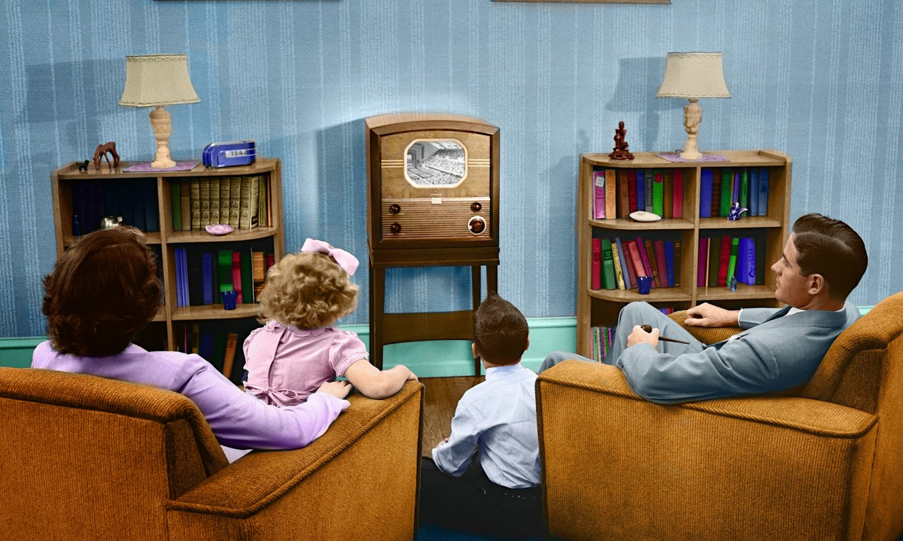
A tree shows how the writer compresses a lot of information into very little information.
Exformation is generated. Exformation is the discarded information, everything we do not actually write but have in our heads when and before we write anything at all.
Information is the measurable, demonstrable utterances we actually come out with.
Little amount of information is transferred as text and is received unchanged.
The reader associates outward and up the tree, obtaining all the associations needed to understand the text.
[The User Illusion: Cutting Consciousness Down to Size (1999) by Tor Norretranders]
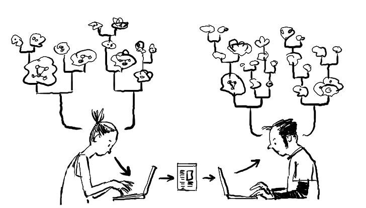
They were like the ant, which can see small objects but not large ones. - George Orwell, Nineteen Eighty-Four (1949)
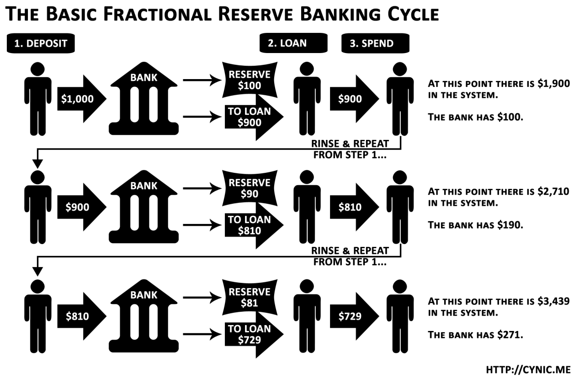
The rules governing Social Security taxation are pretty straightforward.
If you earn above a certain amount of income in retirement, then you'll have to add in some of your benefits in calculating your income tax.
When those Social Security thresholds were originally established in 1984, they were designed to include only a small number of higher-income taxpayers.
But the thresholds weren't indexed for inflation, and so over more than 30 years, the number of Americans affected by the provision has risen dramatically.
In 2013, more than 27 million taxpayers included Social Security benefits on their tax returns.
Of those, 18.5 million indicated that some of their benefits were taxable.
The Motley Fool (2016)
We have to distinguish between particular price movements (caused by demand and supply of particular commodities), movements corresponding to waves, and general price movements (caused by demand and supply of money), movements corresponding to tides.
[Irving Fisher, The Money Illusion (1928)]
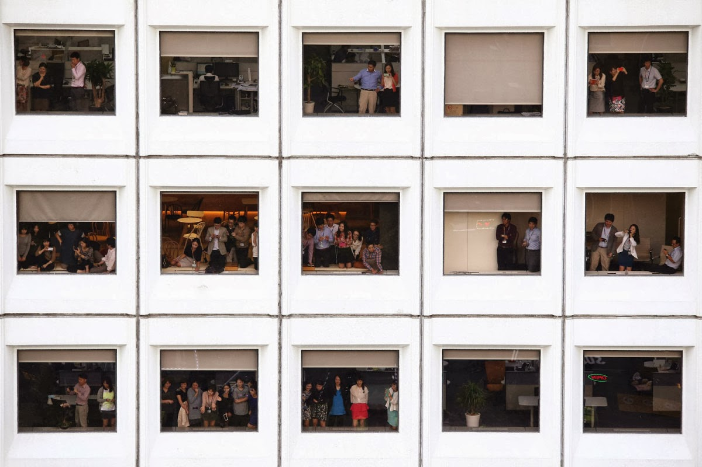
Telegram founder Pavel Durov has raised alarm over a sharp rise in crypto-related kidnappings in France, linking the trend to alleged leaks of tax and investor data. He argues that increasing exposure of personal financial information is making crypto holders easier targets for organized crime groups operating across the country. Durov said France has already recorded around 41 kidnappings involving crypto holders in the first months of 2026. He noted that the pattern shows a direct link between leaked personal data and physical attacks, where criminals use exposed information to identify and track wealthy crypto owners. Durov highlighted the case of former French tax official Ghalia C., detained in 2025 for allegedly selling crypto investor data to criminal groups. He said once criminals access details such as names, addresses, and financial links, identifying high-value crypto holders becomes significantly easier, increasing physical risk. Coinpedia (2026)
[Perspective]
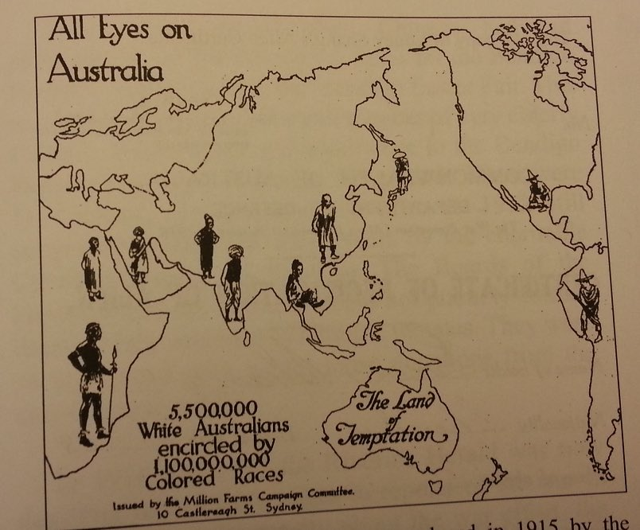
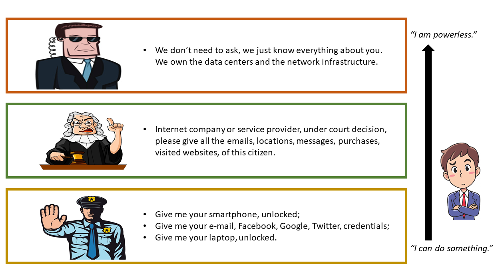
Now, the good news.
You can do something about the two bottom layers. You must have digital hygiene, discipline and be proactive to achieve it though.
First, imagine if a cop or border agent stops you and asks for your phone, unlocked.
You can always refuse of course but through violence, and even torture, they can indeed get the accesses they want from you.
So you mustn't have any application or data in your phone that compromises you.
Always prefer the web mobile pages and not the applications.
If you have an email, archive the important emails in an offline storage, delete the others and always have only the absolutely essential emails that you need.
The same thing for your photos or digital documents.
If you have accounts in Big Tech like Twitter or Facebook, always have an official account, connected to your personal email and phone, but where you keep it to the bare minimum. Consider it your fake "good boy" persona.
Open different accounts with different alias, using random phone numbers that you bought only for this purpose, where you join political and other groups, and leave your opinions.
This accounts are disposable and you should regularly open new ones and forget about the old ones.
In a Age where Big Media and Big Tech in the Western world impose a political and social ideology, you have to be extra careful if you don't follow their mantras.
Even you if don't bring your phone in your travels or when you go out take a coffee, don't forget that the Justice system of your country can demand your information from Big Tech anytime, and without any justification.
The fight against terrorism or "hate speech" have created many loopholes.
So, also change regularly your official accounts, change your email, change your phone and delete the accounts.
When you delete a Google account you aren't only deleting the data but also your shadow, the AI algorithm that Google and others created to ask and receive questions about you.
Everything about you.
(2020)
[João Abel Manta]
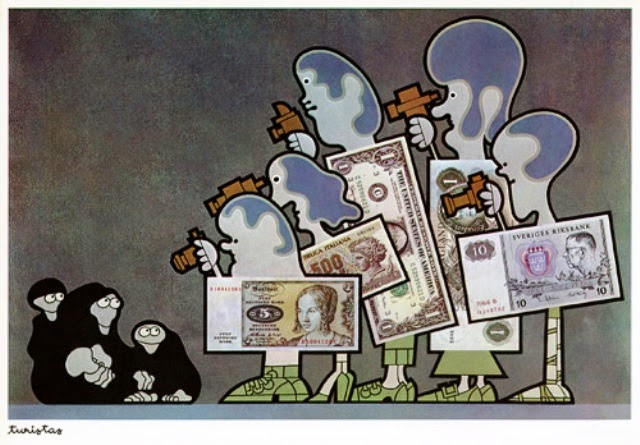 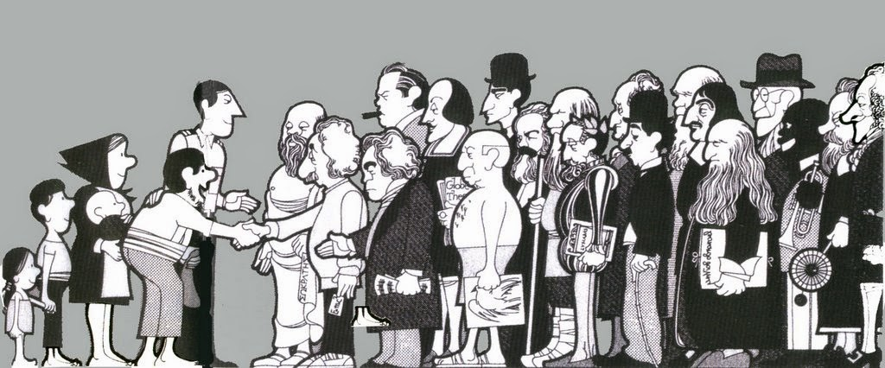
"A campanha 'Por Outra Lei da Nacionalidade' procura uma alteração na Lei da Nacionalidade, para que o princípio de jus sanguinis seja alterado para o princípio de jus soli, o que daria acesso imediato à nacionalidade portuguesa aos filhos de imigrantes que nasçam em Portugal", disse Otávio Raposo, integrante do coletivo Consciência Negra.
"Somos várias associações e coletividades que lutam por uma nova Lei da Nacionalidade, mais justa e que represente a diversidade atual da sociedade portuguesa, que não tem só uma cor ou origem".
Entre as associações que estão vinculadas à campanha estão a Casa do Brasil de Lisboa, a SOS Racismo, o coletivo Consciência Negra, a Associação Lusofonia Cultura e Cidadania, a Solidariedade Imigrante, a Afrolis, a Associação Cavaleiros de S. Brás, entre outras.
Diário de Notícias (2017)
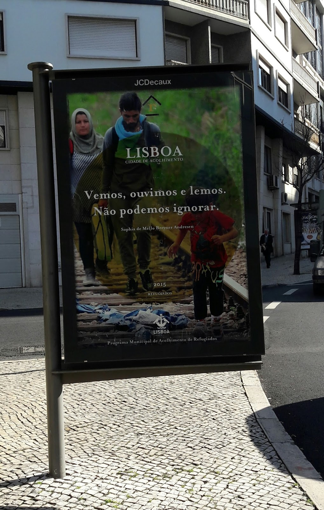
"Devemos aperceber-nos como a moral aparece sempre ligada à origem de uma comunidade e à incorporação das leis que esta instituiu para se preservar. É um lento processo comum a todas as culturas, aparentemente contraditório, mas apenas em aparência."
[António Marques (1997)]
[Ethnicity]
Treat the earth well.
It was not given to you by your parents,
it was loaned to you by your children.
[Kenyan proverb]
Mass immigration undermines the ability of a collection of individual persons to be a people, to have bonds of loyalty to each other; to have the ability to take pride in each other's achievements and feel shame at their shortcomings; at the limit, to love each other, not in the romantic sense, but in the brotherly sense that marks those who live together well.
It is just a fact about human nature, about the kinds of beings we are, that we love and care for those we share life with, and this in a way that is different to those who are strangers to us.
These bonds of partiality are most pronounced in intimate relationships.
They exist also in political communities.
Over time, in the context of concern between generations and cooperation between families, villages, and towns, so communities develop cultures, which bind us together.
They can do this only if there is a certain level of stability, stability regarding whom I live with and, usually, stability in where we live. Without some such culture, people living together are merely a collection of alienated individuals, living an impoverished life.
The direction a culture takes is owned, though, by the community that sustains that form of life.
This is true for native Americans; for aboriginal peoples in Australia; for tribes in Papua New Guinea and Peru.
It is true, too, for the British.
Standpoint (2016)
France is in a debate about French identity.
At a time of economic malaise, of seemingly sliding international prestige, of globalization, and an ongoing wave of terrorism and immigration, what exactly does it mean to be French?
Former French President Nicolas Sarkozy threw the country in a tizzy by announcing that immigrants to France should be taught that, upon entering the country, their ancestors are now Gauls, the inhabitants of what is now France before Roman times.
Immigrant children, children who were not born in France, and even children in French colonies in Africa, were taught that their "ancestors" were Gauls.
In other words, in France, "ancestry" is a matter of ideas and culture, not blood.
To be French is to believe in human rights, and our own Declaration of the Rights of Man, and maybe a few other ideals, like secularism. But for 1,500 years, to be French meant to be Catholic, to pledge allegiance to the king, and to be consecrated to the immaculate heart of Mary.
If French identity has changed radically over the centuries, the implication seems to be that the Frenchmen of the past weren't really French.
You can see French politicians with impressive degrees go on TV and say, with a straight face, things like, "The history of France begins in 1789." Really? Louis XIV? Molière? Montaigne? All not French?
What were they then? Once you start defining French identity as something more than an idea, you start going into unhealthy territory, grasping for other identifiers like descent, blood, even skin color.
Our economic and social problems persist because of an inability to reach a consensus, partly because we all have a different idea about French identity.
Before it can get its house in order, France will have to figure out who and what it is.
The Week (2016)
Ethnicity is central to China's national identity.
Ethnicity and nationality have become almost interchangeable for China's Han.
Even ethnic Han whose families left for other countries generations ago are often regarded as part of a coherent national group, both by China's government and people.
President Xi Jinping in a speech set his sights wider: "Generations of overseas Chinese never forget their home country, their origins or the blood of the Chinese nation flowing in their veins."
China today is extraordinarily homogeneous.
It sustains that by remaining almost entirely closed to new entrants except by birth.
Unless someone is the child of a Chinese national, no matter how long they live there, how much money they make or tax they pay, it is virtually impossible to become a citizen.
China's Han-centred worldview extends to refugees.
Non-Chinese seem just as beguiled by the purity of Han China as the government in Beijing.
Governments and NGOs never suggest that China take refugees from trouble spots elsewhere in the world.
China has almost completely closed its doors to any others.
Aside from the group from Vietnam, China has only 583 refugees on its books.
The country has more billionaires.
The Economist (2016)
Japan says it must look after its own before allowing in Syrian refugees.
"It is an issue of demography," Abe told reporters after his speech to the UN general assembly.
"I would say that before accepting immigrants or refugees, we need to have more activities by women, elderly people and we must raise our birth rate.
There are many things that we should do before accepting immigrants."
The Guardian (2015)
While in each other’s arms entranced They lay, They blessed the night, and curst the coming day.
[Matthew Gregory Lewis (1796), The Monk]
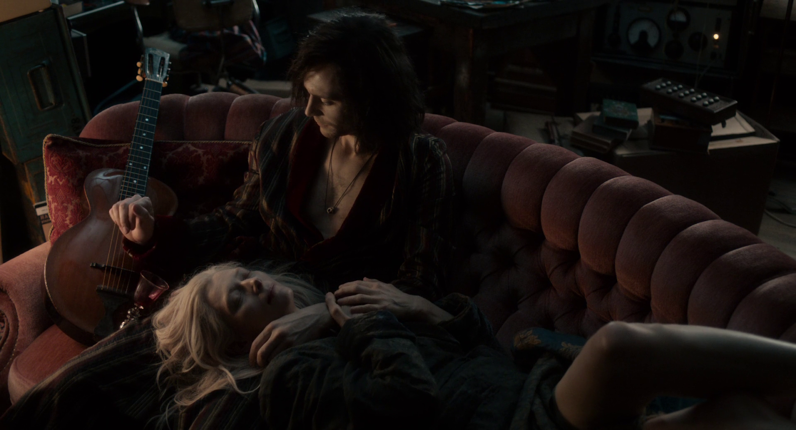 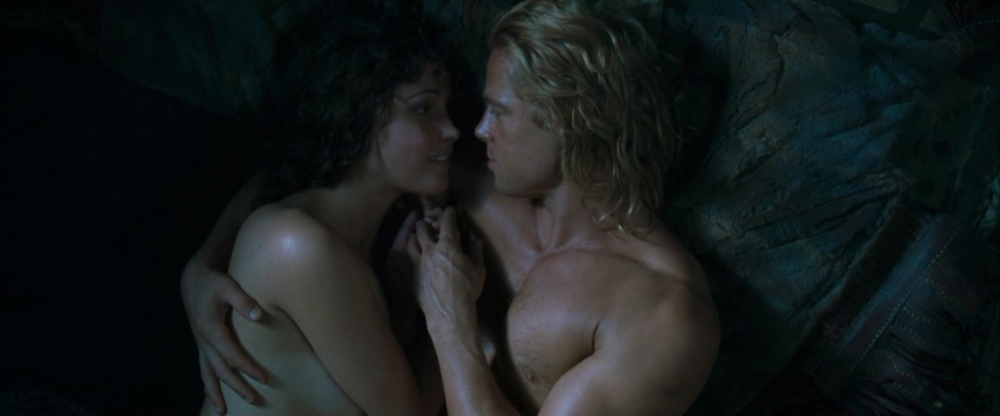
[European Union]
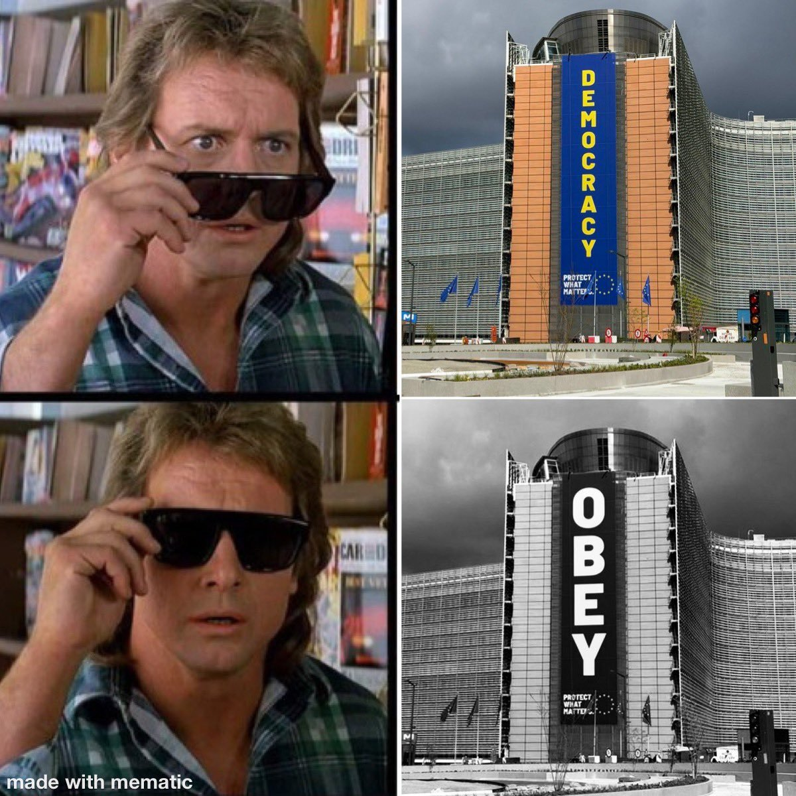
Important employee traits:
• Creativity
• Intelligence
• Motivation
• Effort
• Efficiency
• Effectiveness when working in groups
• Emotional stability
• Sociability
• Honesty
[Why We Sleep (2018), Matthew Walker]
[The S Curve]
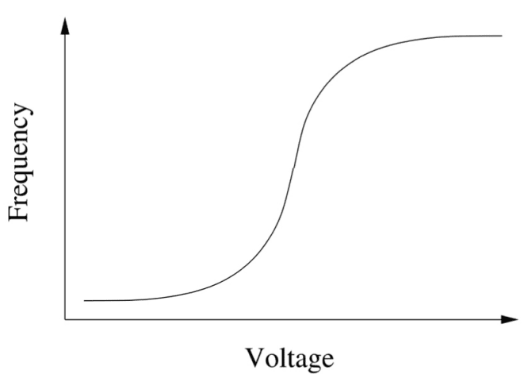